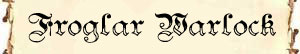

|
|
Ambiente/Habitat | Paludi, Stagni, Acquitrini, Laghi, Foci Fluviali |
| Frequenza | Uncommon | |
| Organizzazione | Gruppo | |
| Periodo di Attività | Qualsiasi | |
| Dieta | Carnivoro | |
| Intelligenza | Low Intelligence (7) | |
| Punti Combattimento | 5 Punti Combattimento | |
| Tesoro | Comune | |
| Allineamento Dominante | Neutrale Malvagio | |
| Numero di Apparizione | 3d3+1 | |
| Classe Armatura | 5 [10 base, -3 corazza, -2 destrezza] | |
| Movimento | 6 esagoni / Nuotare 6 esagoni | |
| Dadi Vita | 2 (+4 punti ferita) | |
| Thac0 | 18 | |
| Numero di Attacchi | Arma, 1 attacco al round | |
| Danni | Danno dell'arma | |
| Poteri Offensivi | Istinto Predatorio; Balzo Violento; |
|
| Poteri Difensivi | Robustezza Superiore [+4 punti ferita]; | |
| Poteri Generici | Salto Inferiore; Camminata Acquatica; Trattenere il Fiato; |
|
| Vulnerabilità | Nessuna; | |
| Resistenza alla Magia | Nessuna; | |
| Sensi | Vista Comune; Sensi Superiori; | |
| Dimensioni | Medium (1,70 m. altezza) | |
| Morale | Steady (11) | |
| Valore in Punti Esperienza | 136 |
| MODIFICATORI AI TIRI SALVEZZA | |||||||||||||||||||||||
| COR | 0 | 52 | ENV | 0 | 58 | MAG | 0 | 65 | MAL | +5 | 56 | MEN | 0 | 63 | RIF | +5 | 52 | ROB | 0 | 56 | VEL | 0 | 53 |
Descrizione
I Froglar sono umanoidi con la testa di rana ed i piedi palmati. Sono in media più bassi di un umano ed hanno una pelle spessa come il cuoio che assume colorazioni dal verde olive al marrone o grigio. Hanno lunghe lingue retrattili come quelle dei rospi. .
Combat
Le armi favorite dei Froglar sono i giavellotti della tipologia Leafhead (iniziativa +3, danni 1d4,gittata 15/30/45 metri), di cui sono soliti trasportarne almeno tre, che scagliano sui nemici in fuga o, di sorpresa, prima di andare entrare in corpo a corpo e la lancia del tipo Sang Kauw (iniziativa +6, danni 1d6,+1 se a due mani) con la quale combattono in melee impugnandola solitamente a due mani. In altri casi, costoro impugnano questa lancia ad una mano od utilizzando una Mace (iniziativa +5, danni 1d6) impugnando al contempo scudi di legno o di guscio di tartaruga.
ISTINTO PREDATORIO (Moderate Special Ability): La creatura possiede un forte istinto predatorio, per tale motivo costei riceve un bonus costante di +1 ai suoi tiri per colpire.
BALZO VIOLENTO (Lesser Special Ability): Quando questa creatura riesce ad attaccare un avversario atterrando in corpo a corpo con lo stesso dopo aver effettuato un salto, riesce ad imprimere molta più forza al suo attacco ricevendo un bonus di +1 al tiro per colpire e di +2 ai danni (bonus che si considera come dovuto alla forza della creatura). Questo beneficio si applica solo al primo attacco effettuato dalla creatura nel round in cui è atterrata.
ROBUSTEZZA SUPERIORE (Typical Ability): Il fisico della creatura è estremamente robusto. Ciò conferisce alla stessa una robustezza superiore che gli garantisce 4 punti ferita supplementari.
SALTO INFERIORE (Lesser Special Ability): Quando questa creatura si trova sul terreno, una volta per ogni singolo round, può, in luogo di spostarsi di 3 metri di movimento (o anche di mezzo movimento), effettuare un grande balzo fino a 6 metri di distanza. Si noti che, qualora la creatura utilizza questo metodo di movimento per uscire dal corpo a corpo la stessa dovrà subire normalmente gli attacchi di opportunità.
CAMMINATA ACQUATICA (Lesser Special Ability): Questa creatura è in grado di spostarsi camminando con il corpo parzialmente immerso nell'acqua riducendo di una classe la penalità al movimento che le sarebbe normalmente applicata. Si noti che quest'abilità non riduce l'eventuale penalità al combattimento prevista per il corpo parzialmente immerso nell'acqua.
TRATTENERE IL FIATO (Least Special Ability): Grazie alla propria conformazione fisica questa creatura riesce a mantenere il fiato per 12 round prima di rischiare l'annegamento.
Habitat/Society
X.
Ecology
X.

|
|
Ambiente/Habitat | Paludi, Stagni, Acquitrini, Laghi, Foci Fluviali |
| Frequenza | Rare | |
| Organizzazione | Gruppo | |
| Periodo di Attività | Qualsiasi | |
| Dieta | Carnivoro | |
| Intelligenza | Very intelligent (11) | |
| Punti Combattimento | 12 Punti Combattimento | |
| Tesoro | Comune * 2 | |
| Allineamento Dominante | Neutrale Malvagio | |
| Numero di Apparizione | 1 | |
| Classe Armatura | 5 [10 base, -3 corazza, -2 destrezza] | |
| Movimento | 6 esagoni / Nuotare 6 esagoni | |
| Dadi Vita | 3 (+4 punti ferita) | |
| Thac0 | 17 | |
| Numero di Attacchi | Bastone, 1 attacco al round | |
| Danni | 1d4 (Botta) | |
| Poteri Offensivi | Istinto Predatorio; | |
| Poteri Difensivi | Robustezza Superiore [+4 punti ferita]; | |
| Poteri Generici | Stregoneria della Radice:
Rigenerazione del Rospo; Stregoneria della Radice: Stretta delle Alghe; Stregoneria della Radice: Sfera Elettrica; Salto Inferiore; Camminata Acquatica; Trattenere il Fiato; |
|
| Vulnerabilità | Nessuna; | |
| Resistenza alla Magia | Nessuna; | |
| Sensi | Vista Comune; Sensi Superiori; | |
| Dimensioni | Medium (1,70 m. altezza) | |
| Morale | Elite (13) | |
| Valore in Punti Esperienza | 300 |
| MODIFICATORI AI TIRI SALVEZZA | |||||||||||||||||||||||
| COR | 0 | 49 | ENV | 0 | 55 | MAG | +5 | 57 | MAL | +5 | 42 | MEN | +10 | 50 | RIF | +5 | 49 | ROB | 0 | 53 | VEL | 0 | 49 |
Combat
Gli Stregoni Froglar combattono principalmente dalle retrovie scagliando sui propri avversari pericolose sfere elettriche, bloccando i propri avversari e curando i propri compagni. Se costretti a combattere nel corpo a corpo costoro possono utilizzare il bastone di radice che impugnano per combattere (iniziativa +4, danni 1d4).
ISTINTO PREDATORIO (Moderate Special Ability): La creatura possiede un forte istinto predatorio, per tale motivo costei riceve un bonus costante di +1 ai suoi tiri per colpire.
STREGONERIA
DELLA RADICE:
La creatura può utilizzare
arcaici rituali magici utilizzando una speciale staffa costituta da una
radice di antichi alberi morti delle paludi impreziosita con foglie di piante
rare, ossa di creature ed altri ammennicoli vari. I rituali non richiedono il mantenimento della
concentrazione ma richiedono l'utilizzo di componenti vocali, somatici e
materiali (appunto l'utilizzo della radice). Si noti che essendo rituali magici
questi effetti possono essere evitati con la Magic Resistance.
-
RIGENERAZIONE DEL ROSPO
(Moderate
Special
Ability):
Con un'azione complessa dalla
durata di un intero round,
la creatura può lanciare questa magia su un qualsiasi rospo, anche se gigante o
mostruoso, oppure su un appartenente alla razza dei Froglar (compreso sé stesso)
che si trovi entro 15 metri di distanza..
Al termine del round in cui questo potere è utilizzato il beneficiario vedrà
rigenerare le ferite eventualmente subite
curandosi di 5 punti ferita.
Questa creatura può utilizzare
questo specifico potere
fino a tre volte al giorno.
-
STRETTA DELLE ALGHE
(Moderate
Special
Ability):
Con un'azione complessa dal fattore
iniziativa pari a +5,
la creatura può lanciare questa magia su un essere che si trovi
immerso anche solo parzialmente
in acqua palustre. La
vittima potrà evitare gli effetti di questo rituale superando
un tiro salvezza su robustezza
(modificato dal punteggio di
forza in luogo di quello di costituzione). Le creature Huge o di dimensione
superiore sono immuni agli effetti di questo rituale. Se il tiro salvezza
fallisce le alghe presenti nella palude si attorciglieranno sulla vittima la
quale non
potrà spostarsi dalla posizione occupata essendo il suo movimento impedito dalle
alghe. La vittima non subirà, però, alcuna penalità al combattimento ed al
lancio delle magia anche somatiche (potendo, quindi, utilizzare eventuali forme
magiche di spostamento per liberarsi dalla stretta (si pensi alle varie forme di
teletrasporto) definitivamente. Le alghe continueranno a mantenere sul posto la
creatura per 1d4+1 round.
Una volta utilizzata questa
abilità speciale la
creatura non può utilizzarla nuovamente nei quattro round di combattimento
immediatamente successivi.
-
SFERA ELETTRICA
(Moderate
Special
Ability):
Con un'azione complessa dal fattore
iniziativa pari a +4,
la creatura può scagliare una sfera elettrica contro un qualsiasi bersaglio si trovi
entro 21 metri di distanza. La
sfera fluttua nell'aria a discreta velocità. La vittima può provare ad evitarla
superando
un tiro salvezza su
riflessi
(al quale non
sarà applicato il modificatore dovuto alla differenza di livelli). Se il tiro
salvezza fallisce la vittima
sarà colpita dalla sfera e subirà 5 danni
elettrici.
ROBUSTEZZA SUPERIORE (Typical Ability): Il fisico della creatura è estremamente robusto. Ciò conferisce alla stessa una robustezza superiore che gli garantisce 4 punti ferita supplementari.
SALTO INFERIORE (Lesser Special Ability): Quando questa creatura si trova sul terreno, una volta per ogni singolo round, può, in luogo di spostarsi di 3 metri di movimento (o anche di mezzo movimento), effettuare un grande balzo fino a 6 metri di distanza. Si noti che, qualora la creatura utilizza questo metodo di movimento per uscire dal corpo a corpo la stessa dovrà subire normalmente gli attacchi di opportunità.
CAMMINATA ACQUATICA (Lesser Special Ability): Questa creatura è in grado di spostarsi camminando con il corpo parzialmente immerso nell'acqua riducendo di una classe la penalità al movimento che le sarebbe normalmente applicata. Si noti che quest'abilità non riduce l'eventuale penalità al combattimento prevista per il corpo parzialmente immerso nell'acqua.
TRATTENERE IL FIATO (Least Special Ability): Grazie alla propria conformazione fisica questa creatura riesce a mantenere il fiato per 12 round prima di rischiare l'annegamento.
Habitat/Society
X.
Ecology
X.
|
|
Ambiente/Habitat | Paludi, Stagni, Acquitrini, Laghi, Foci Fluviali |
| Frequenza | Uncommon | |
| Organizzazione | Gruppo | |
| Periodo di Attività | Qualsiasi | |
| Dieta | Carnivoro | |
| Intelligenza | Average intelligence (8) | |
| Punti Combattimento | 9 Punti Combattimento | |
| Tesoro | Comune | |
| Allineamento Dominante | Neutrale Malvagio | |
| Numero di Apparizione | 1d3 | |
| Classe Armatura | 3 [10 base, -5 corazza, -2 destrezza] | |
| Movimento | 6 esagoni / Nuotare 6 esagoni | |
| Dadi Vita | 4 (+4 punti ferita) | |
| Thac0 | 16 | |
| Numero di Attacchi | Arma, 1 attacco al round | |
| Danni | Danno dell'arma con +2 dovuto alla forza | |
| Poteri Offensivi | Istinto Predatorio; Balzo Violento; |
|
| Poteri Difensivi | Maestria di Lancia Froglar; Robustezza Superiore [+4 punti ferita]; |
|
| Poteri Generici | Salto Inferiore; Camminata Acquatica; Trattenere il Fiato; |
|
| Vulnerabilità | Nessuna; | |
| Resistenza alla Magia | Nessuna; | |
| Sensi | Vista Comune; Sensi Superiori; | |
| Dimensioni | Medium (1,80 m. altezza) | |
| Morale | Elite (14) | |
| Valore in Punti Esperienza | 440 |
| MODIFICATORI AI TIRI SALVEZZA | |||||||||||||||||||||||
| COR | 0 | 49 | ENV | 0 | 55 | MAG | 0 | 62 | MAL | +5 | 42 | MEN | 0 | 60 | RIF | +5 | 49 | ROB | 0 | 53 | VEL | 0 | 49 |
Combat
I Campioni Froglar indossano solitamente una corazza di pelle e scaglia di tartaruga che porta a Classe Armatura 5.L'arma utilizzata dai Campioni Froglar è la lancia del tipo Sang Kauw (iniziativa +6, danni 1d6,+3 con bonus di forza quando impugnata a due mani) che utilizzano a due mani nel combattimento in corpo a corpo. Costoro, infatti, sono particolarmente abili nell'uso di quest'arma potendo deflettere gli attacchi nemici e contrattaccarli sferrando colpi improvvisi.
ISTINTO PREDATORIO (Moderate Special Ability): La creatura possiede un forte istinto predatorio, per tale motivo costei riceve un bonus costante di +1 ai suoi tiri per colpire.
MAESTRIA DI LANCIA FROGLAR (Superior Special Ability): Quando questa creatura combatte in corpo a corpo utilizzando una qualsiasi arma appartenente al gruppo delle lance (armi ad asta) impugnandola a due mani, costei può provare a deflettere, ogni round, un colpo in arrivo utilizzando le regole previste dall'arte di combattimento Deflettere i Colpi con un punteggio da 1 a 4 su 1d20. Se la creature riesce a deflettere il colpo in arrivo, inoltre, costei potrà costui potrà effettuare, unicamente contro colui che ha sferrato tale colpo, un attacco extra alla fine del round in corso utilizzando la suddetta lancia.
BALZO VIOLENTO (Lesser Special Ability): Quando questa creatura riesce ad attaccare un avversario atterrando in corpo a corpo con lo stesso dopo aver effettuato un salto, riesce ad imprimere molta più forza al suo attacco ricevendo un bonus di +1 al tiro per colpire e di +2 ai danni (bonus che si considera come dovuto alla forza della creatura). Questo beneficio si applica solo al primo attacco effettuato dalla creatura nel round in cui è atterrata.
ROBUSTEZZA SUPERIORE (Typical Ability): Il fisico della creatura è estremamente robusto. Ciò conferisce alla stessa una robustezza superiore che gli garantisce 4 punti ferita supplementari.
SALTO INFERIORE (Lesser Special Ability): Quando questa creatura si trova sul terreno, una volta per ogni singolo round, può, in luogo di spostarsi di 3 metri di movimento (o anche di mezzo movimento), effettuare un grande balzo fino a 6 metri di distanza. Si noti che, qualora la creatura utilizza questo metodo di movimento per uscire dal corpo a corpo la stessa dovrà subire normalmente gli attacchi di opportunità.
CAMMINATA ACQUATICA (Lesser Special Ability): Questa creatura è in grado di spostarsi camminando con il corpo parzialmente immerso nell'acqua riducendo di una classe la penalità al movimento che le sarebbe normalmente applicata. Si noti che quest'abilità non riduce l'eventuale penalità al combattimento prevista per il corpo parzialmente immerso nell'acqua.
TRATTENERE IL FIATO (Least Special Ability): Grazie alla propria conformazione fisica questa creatura riesce a mantenere il fiato per 12 round prima di rischiare l'annegamento.
Habitat/Society
X.
Ecology
X.
Villaggio Froglar
Il villaggio
rappresenta la forma base e più comune di aggregazione dei Froglar. Sparsi nelle
paludi, infatti, esistono numerosi piccoli villaggi di Froglar. Sono piccole
comunità autonome (specie nelle zone remote od isolate) oppure subordinate ad
una più rara cittadella Froglar di cui rappresentano villaggi satelliti, luoghi
di confine, insediamenti di caccia.
Tipicamente un villaggio Froglar può contare su:
5d6+10 Forglar
1d2 Froglar Chamjpion + 1 ogni 10 Froglar o frazione
50% di 1 Froglar Warlock ogni 10 Froglar o frazione
10% di 1 Frog Emperor (cavalcatura) ogni 10 Froglar o frazione
33% di 1 Froglar di Classe ogni 10 Froglar o frazione
Selezione della classe
[1d12]
(1-5)
Combattente:
[1d12] (1-6)
Fighter, (7-8)
Defender, (9-11)
Archer,
(12)
Adoratore del Sangue
(6-8)
Vagabondo:
[1d12] (1-8)
Thief;
(9-12)
Hunter
(9-10)
Sacerdote:
[1d12] (1-9)
Cleric;
(10-11)
Shaman;
(12)
Negative Master
(11)
Combattente/Sacerdote:
[1d12] (1-10)
Fighter, (11-12)
Defender/Cleric;
(12)
Combattente/Vagabondo:
[1d12] (1-10)
Fighter/Thief;
(11-12)
Fighter/Hunter;
Selezione del livello: [1d12] (1) 1° livello; (2-3) 2° livello; (4-6) 3° livello; (7-9) 4° livello; (10-11) 5° livello; (12) 6° livello.
Tesoro delle Comunità
Oltre al tesoro individuale, le comunità (piccola e grande), possiedono solitamente un tesoro collettivo come indicato nelle seguenti tabelle:
Tesoro del Villaggio Froglar
| Tipologia di Tesoro | 1 Dado Vita | Quantità |
| Gemme |
20% + 20% + 20% |
2d4+2 |
| Oggetti Preziosi |
20% + 20% |
1d3 |
| Oggetti Comuni |
50% |
1d6 |
| Armi | 33% + 33% | 1d4 |
| Armature | 33% + 33% | 1d2 |
| Oggetto Magico | 30% + 20% + 10% | 1 oggetto magico 1d10: (1-7) common (8-10) rare |
| Monete di platino | 20% + 10% | 1d10 * 15 monete di platino |
| Monete d'oro | 50% + 40% +30% | 1d12+3* 100 monete d'oro |
| Monete d'argento | 50% + 40% | 2d12+6 * 100 monete di argento |
| Monete di rame | 50% + 50% | 2d20+10 * 100 monete di rame |